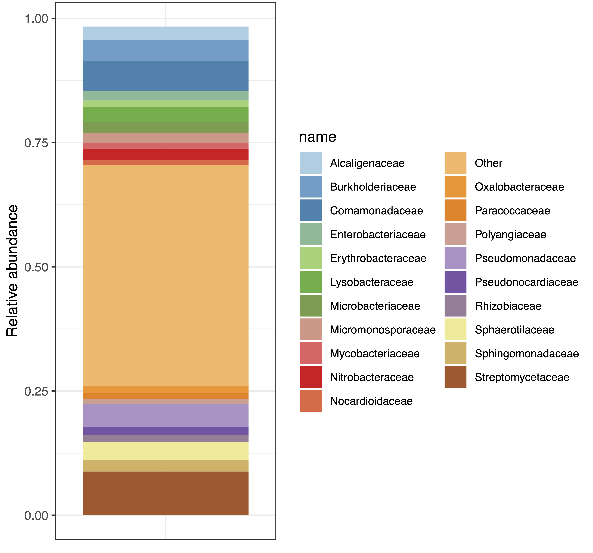
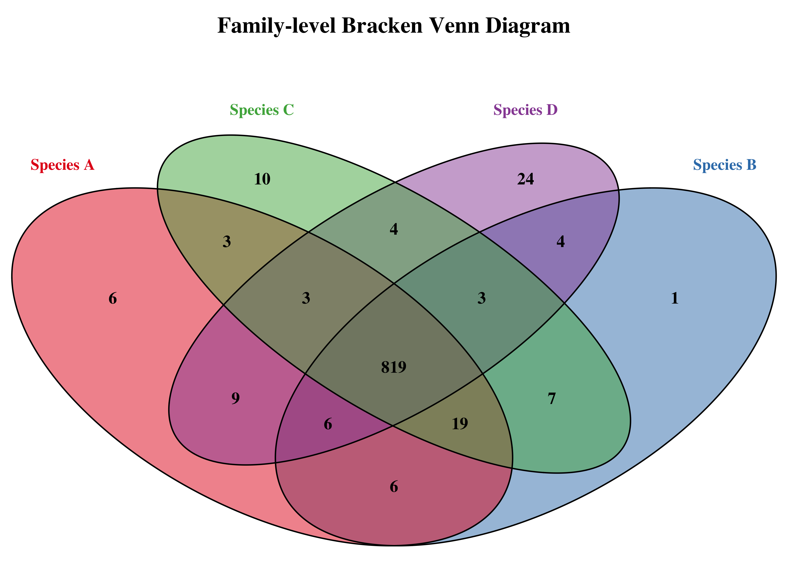

Last updated: 2026-03-24
Checks: 7 0
Knit directory: song-lab/
This reproducible R Markdown analysis was created with workflowr (version 1.7.2). The Checks tab describes the reproducibility checks that were applied when the results were created. The Past versions tab lists the development history.
Great! Since the R Markdown file has been committed to the Git repository, you know the exact version of the code that produced these results.
Great job! The global environment was empty. Objects defined in the global environment can affect the analysis in your R Markdown file in unknown ways. For reproduciblity it’s best to always run the code in an empty environment.
The command set.seed(20240605) was run prior to running
the code in the R Markdown file. Setting a seed ensures that any results
that rely on randomness, e.g. subsampling or permutations, are
reproducible.
Great job! Recording the operating system, R version, and package versions is critical for reproducibility.
Nice! There were no cached chunks for this analysis, so you can be confident that you successfully produced the results during this run.
Great job! Using relative paths to the files within your workflowr project makes it easier to run your code on other machines.
Great! You are using Git for version control. Tracking code development and connecting the code version to the results is critical for reproducibility.
The results in this page were generated with repository version 7b0a72b. See the Past versions tab to see a history of the changes made to the R Markdown and HTML files.
Note that you need to be careful to ensure that all relevant files for
the analysis have been committed to Git prior to generating the results
(you can use wflow_publish or
wflow_git_commit). workflowr only checks the R Markdown
file, but you know if there are other scripts or data files that it
depends on. Below is the status of the Git repository when the results
were generated:
Ignored files:
Ignored: .DS_Store
Ignored: .RData
Ignored: .Rhistory
Ignored: .Rproj.user/
Ignored: analysis/.DS_Store
Untracked files:
Untracked: abundance_stacked_bar.R
Untracked: analysis/de_novo_assembly.Rmd
Untracked: analysis/go-term-enrichment.Rmd
Untracked: analysis/ref_mg_assembly.Rmd
Untracked: analysis/trans-de-novo.Rmd
Unstaged changes:
Modified: analysis/Publish all files
Modified: analysis/_site.yml
Modified: analysis/theme3.css
Deleted: analysis/transcriptome.Rmd
Deleted: analysis/week1-notes.Rmd
Deleted: analysis/week12-notes.Rmd
Deleted: analysis/week14-notes.Rmd
Deleted: analysis/week16-notes.Rmd
Deleted: analysis/week2-notes.Rmd
Deleted: analysis/week3-notes.Rmd
Deleted: analysis/week4-notes.Rmd
Deleted: analysis/week5-notes.Rmd
Deleted: analysis/week6-notes.Rmd
Deleted: analysis/week7-notes.Rmd
Deleted: analysis/week9-notes.Rmd
Note that any generated files, e.g. HTML, png, CSS, etc., are not included in this status report because it is ok for generated content to have uncommitted changes.
These are the previous versions of the repository in which changes were
made to the R Markdown (analysis/shotgun_mg_analysis.Rmd)
and HTML (docs/shotgun_mg_analysis.html) files. If you’ve
configured a remote Git repository (see ?wflow_git_remote),
click on the hyperlinks in the table below to view the files as they
were in that past version.
| File | Version | Author | Date | Message |
|---|---|---|---|---|
| Rmd | 7b0a72b | emilyc-baker | 2026-03-24 | wflow_publish(c("analysis/alphafold.Rmd", "analysis/barkdull.Rmd", |
Many metagenomic sequencing projects utilize amplicon sequencing (16S/18S/ITS), but this workflow is specific to shotgun sequencing. Read more about the difference between these 2 options here.
On the ASU Sol cluster, instead of maintaining pre-loaded modules on the cluster, the HPC team recommends loading modules within a Mamba environment. Because of this, all scripts here will be run using a Mamba environment. You may replace these environment activations with module load commands if your HPC supports it, or you can run the code below to create a Mamba environment for each package needed for this analysis. I have chosen to keep them separate to avoid version compatability issues, as well as make the environments reusable for other projects.
module load mamba
mamba create -n trim_galore -c bioconda trim-galore -y
source activate trim_galore
trim-galore --version
source deactivate
mamba create -n bowtie2 -c bioconda bowtie2 -y
source activate bowtie2
bowtie2 --version
source deactivate
mamba create -n kraken2 -c bioconda kraken2 -y
source activate kraken2
kraken2 --version
source deactivate
mamba create -n bracken -c bioconda bracken -y
source activate bracken
bracken -v
source deactivateIf no errors are produced by checking the version, then all environments are properly created and you may begin the workflow.
The first step, as in most omics projects, is to trim and filter the sequence files for adapters and low-quality reads. To perform these steps, I used FastP. The script I used for this is below:
#!/bin/bash
#SBATCH --job-name=trim_galore
#SBATCH --output=logs/tg_%j.out
#SBATCH --error=logs/tg_%j.err
#SBATCH --time=12:00:00
#SBATCH --mem=32G
#SBATCH -c 8
#SBATCH --mail-type=ALL
#SBATCH --mail-user=user@email.edu
# --------------------------------------------------
# Setup
# --------------------------------------------------
module purge
module load mamba/latest
source activate trim
INDIR="/path/to/raw/reads/"
OUTDIR="path/to/output/directory"
mkdir -p "$OUTDIR"
echo "Processing directory: $INDIR"
echo "Input: $INDIR"
echo "Output: $OUTDIR"
# --------------------------------------------------
# Run trim_galore on all read pairs
# --------------------------------------------------
for READ1 in "${INDIR}"/*_1.fq.gz; do
[[ -f "$READ1" ]] || continue
READ2="${READ1/_1.fq.gz/_2.fq.gz}"
if [[ -f "$READ2" ]]; then
echo "Trimming: $READ1 / $READ2"
trim_galore --trim-n \
--cores 8 \
--quality 20 \
--clip_R1 2 \
--clip_R2 2 \
--nextera \
--fastqc \
--output_dir "$OUTDIR" \
--paired "$READ1" "$READ2"
else
echo "Warning: Missing pair for $READ1"
fi
done
echo "Running MultiQC..."
multiqc "$OUTDIR" \
-o "$OUTDIR" \
-n "multiqc_fastqc_report.html"
echo "MultiQC complete"This step will be used to remove any host sequences that may have made their way into the sample. In order to perform this step for a species without a reference genome, we must choose a closely related species with an annotated reference genome. If your organism does have a reference genome, you may use that instead, but for the purposes of this tutorial I will show the process of host sequence filtering when you do not have a host reference genome. You will follow the same steps as the ones below, you will simply replace the “close enough” genome with your reference.
In order to filter host sequences without a reference genome, we must create a database of closely related genomes to filter as much as we can from our sample data. For example, let us look at Schistocerca ceratiola, the rosemary grasshopper. Since this organism does not have a reference genome for us to use, we will pull the genome of closely related species to try and filter our data as much as possible. I am also including the Human genome and the mitochondrial genome for our closely related species in this database, as these are all possible sources of contamination that need to be filtered out. Here is a list of the genomes I am using for this tutorial:
Please note there is not automated way to download mitochondrial genomes using wget, you must download the fasta from the NCBI site manually and upload it to your HPC.
First, we must download all the necessary genome files, gunzip them, and then concatenate them into 1 database fasta file. We can do this using the code below:
# Download S. gregaria reference genome
wget https://ftp.ncbi.nlm.nih.gov/genomes/all/GCF/023/897/955/GCF_023897955.1_iqSchGreg1.2/GCF_023897955.1_iqSchGreg1.2_genomic.fna.gz
# Download Homo sapiens reference genome
wget https://ftp.ncbi.nlm.nih.gov/genomes/all/GCF/000/001/405/GCF_000001405.40_GRCh38.p14/GCF_000001405.40_GRCh38.p14_genomic.fna.gz
# Gunzip all gzipped files in directory
gunzip *.gz
# Rename file extensions from fna to fasta
mv GCF_023897955.1_iqSchGreg1.2_genomic.fna GCF_023897955.1_iqSchGreg1.2_genomic.fasta
mv GCF_000001405.40_GRCh38.p14_genomic.fna GCF_000001405.40_GRCh38.p14_genomic.fasta
# Concatenate all files into consensus fasta file
cat GCF_023897955.1_iqSchGreg1.2_genomic.fasta GCF_000001405.40_GRCh38.p14_genomic.fasta sch_greg_mito.fasta > databaseNow that we have our concensus fasta constructed, we can build our Bowtie2 database using the following script:
#!/usr/bin/env bash
#SBATCH -J build_bt_db
#SBATCH -o /path/to/out/logs/%x.%j.out
#SBATCH -e /path/to/err/logs/%x.%j.err
#SBATCH -N 1
#SBATCH -c 4
#SBATCH --mem=150G
#SBATCH -t 12:00:00
#SBATCH -p public
#SBATCH --mail-type=ALL
#SBATCH --mail-user=user@email.edu
ml mamba
source activate bowtie2
bowtie2-build /path/to/database.fasta {DATABASE_NAME}This will be the database that Bowtie2 uses to filter our data for contaminant DNA. The script below will automatically search for matching forward and reverse reads using the for loop and run them through the filtration process.
#!/usr/bin/env bash
#SBATCH -J filter_bt2
#SBATCH -o /path/to/out/logs/%x.%j.out
#SBATCH -e /path/to/err/logs/%x.%j.err
#SBATCH -N 1
#SBATCH -c 16
#SBATCH --mem=32G
#SBATCH -t 1-00:00:00
#SBATCH -p public
#SBATCH --mail-type=ALL
#SBATCH --mail-user=user@email.edu
module load mamba
source activate bowtie2 # env with bowtie2 installed
INDIR=/path/to/filtered/metagenomic/data
INDEX=/path/to/botwie2/index/{DATABASE_NAME}
OUTDIR=/path/to/out/directory
mkdir -p "$OUTDIR"
for R1 in "$INDIR"/*_R1_001.fasta; do
base=$(basename "$R1" _R1_001.fasta)
R2="$INDIR/${base}_R2_001.fasta"
echo "Processing $base"
bowtie2 \
--very-sensitive-local \
-x "$INDEX" \
-f \
-1 "$R1" \
-2 "$R2" \
-p 16 \
--un-conc "${OUTDIR}/${base}_nonhost.fasta" \
-S /dev/null
doneIn order to perform taxonomic classification, we will need to concatenate each sample’s forward and reverse reads into on forward and backward consensus file (assuming you have paired-end reads). If you have multiple species, be sure to concatenate these files per-species and do not combine species files. You can perform this by using the command below:
cat *1.fasta > all_forward.fasta
cat *2.fasta > all_reverse.fastaNow we have filtered and host-contamination cleaned consensus files for all forward and all reverse reads.
Now that our data has been filtered for host sequences and potential human contamination, we can begin to identify the composition of the gut contents. To perform this step we will use Kraken2, but first we must download a database for our Kraken run to search against. For the sake of time, you can run the Kraken database download script while the host filtering script is running, as downloading a Kraken2 database can take many hours.
#!/usr/bin/env bash
#SBATCH -J kraken2
#SBATCH -o /path/to/out/logs/%x.%j.out
#SBATCH -e /path/to/err/logs/%x.%j.err
#SBATCH -N 1
#SBATCH -c 64
#SBATCH --mem=360G
#SBATCH -t 00:30:00
#SBATCH --mail-type=ALL
#SBATCH --mail-user=user@email.edu'
#SBATCH --array=0-6
ml mamba
source activate kraken2
INDIR=/scratch/ebaker48/metagenomics/brandon_mole_cricket/combo_human_xya_greg_bt2/concatenated_fastas
OUTDIR=/scratch/ebaker48/metagenomics/brandon_mole_cricket/kraken2_human_and_host_filtered
KRAKEN_DB=/scratch/ebaker48/metagenomics/brandon_mole_cricket/databases/new_kraken
mkdir -p "$OUTDIR"
# Create array of R1 files
FILES=($(ls $INDIR/*_1.fasta))
R1=${FILES[$SLURM_ARRAY_TASK_ID]}
# Derive sample name
SAMPLE=$(basename "$R1" _1.fasta)
R2="$INDIR/${SAMPLE}_2.fasta"
echo "Processing $SAMPLE"
kraken2 \
--db "$KRAKEN_DB" \
--paired "$R1" "$R2" \
--threads 64 \
--output "$OUTDIR/${SAMPLE}.kraken" \
--report "$OUTDIR/${SAMPLE}.report" \
--classified-out "$OUTDIR/${SAMPLE}_classified#.fasta" \
--unclassified-out "$OUTDIR/${SAMPLE}_unclassified#.fasta"This run will output 6 files:
Read more about these files here.
Bracken is developed by the same lab as Kraken2, and is made to take Kraken2 output and produce abundance estimates for the given data. I used the below script to produce Bracken outputs at the Class, Order, Family, Genus, and Species levels. I found the family and genus level data gave the most insight into the diversity of the microbiome contents.
#!/usr/bin/env bash
#SBATCH -J bracken
#SBATCH -o /scratch/ebaker48/metagenomics/brandon_mole_cricket/logs/bracken/%x.%j.out
#SBATCH -e /scratch/ebaker48/metagenomics/brandon_mole_cricket/logs/bracken/%x.%j.err
#SBATCH -N 1
#SBATCH -c 8
#SBATCH --mem=32G
#SBATCH -t 00:20:00
#SBATCH --mail-type=ALL
#SBATCH --mail-user=ebaker48@asu.edu
#########################################################
#################### USER SETTINGS ####################
#########################################################
INDIR=/scratch/ebaker48/metagenomics/brandon_mole_cricket/kraken2_human_and_host_filtered/kraken2_reports
OUTDIR=/scratch/ebaker48/metagenomics/brandon_mole_cricket/bracken_human_and_host_filtered
BRACKEN_DB="/scratch/ebaker48/metagenomics/brandon_mole_cricket/databases/new_kraken"
# Activate Bracken environment safely
ml mamba
source activate bracken
# Make sure output dir exists
mkdir -p "$OUTDIR"
#########################################################
#################### MAIN LOOP #########################
#########################################################
# Loop through all raw Kraken2 reports (exclude previous Bracken outputs)
for REPORT in "$INDIR"/*.report; do
# Skip files that have "_bracken" in the name
[[ "$REPORT" == *"_bracken"* ]] && continue
SAMPLE=$(basename "$REPORT" .report)
echo "Processing $SAMPLE"
echo "Input report: $REPORT"
# Optional: create per-sample subdir if you want (or comment out if not needed)
# SAMPLE_DIR="$OUTDIR/$SAMPLE"
# mkdir -p "$SAMPLE_DIR"
# Run Bracken for all taxonomic levels directly in OUTDIR
for LEVEL in C O F G S; do
SPECIES_DIR="$OUTDIR/${SAMPLE}"
mkdir -p "$SPECIES_DIR"
OUTFILE="$SPECIES_DIR/${SAMPLE}_bracken_${LEVEL}.txt"
echo "Running Bracken level $LEVEL -> $OUTFILE"
cd "$SPECIES_DIR"
bracken \
-d "$BRACKEN_DB" \
-i "$REPORT" \
-o "$OUTFILE" \
-r 150 \
-l "$LEVEL"
done
done
Stacked bar plots are useful to show the relative abundance of species present in your samples. Here is the script I used to create bar plots for each sample at each taxonomic level produced in my Bracken script. Additionally, I still had some human DNA contamination in my samples, so this script filters any hits to the human genome at the 5 taxonomic levels.
# ===========================================
# Bracken per-file stacked barplots
# REMOVE HUMAN LINEAGE (taxonomically correct)
# ===========================================
library(tidyverse)
library(RColorBrewer)
# -------------------------
# User settings
# -------------------------
bracken_dir <- "/scratch/ebaker48/metagenomics/brandon_mole_cricket/bracken_human_and_host_filtered"
output_dir <- "/scratch/ebaker48/metagenomics/brandon_mole_cricket/bracken_plots_per_sample"
dir.create(output_dir, showWarnings = FALSE, recursive = TRUE)
min_abundance <- 0.01
# -------------------------
# Human lineage taxids
# (major nodes in lineage)
# -------------------------
human_taxids <- c(
9606, # Homo sapiens
9605, # Homo
9604, # Hominidae
314295, # Homininae
207598, # Hominini
9443 # Primates
)
# -------------------------
# Get all Bracken files
# -------------------------
files <- list.files(bracken_dir, pattern = "_bracken_.*\\.txt$", full.names = TRUE)
# -------------------------
# Loop through files
# -------------------------
for (file in files) {
cat("Processing:", file, "\n")
filename <- basename(file)
sample_name <- sub("_bracken_.*\\.txt$", "", filename)
level <- sub(".*_bracken_([A-Z])\\.txt$", "\\1", filename)
df <- read.delim(file, stringsAsFactors = FALSE)
# -------------------------
# REMOVE HUMAN LINEAGE
# -------------------------
df <- df %>%
filter(!taxonomy_id %in% human_taxids) %>%
filter(!grepl("Homo|Hominidae|Primates", name, ignore.case = TRUE)) # extra safety
# -------------------------
# Clean + collapse
# -------------------------
df <- df %>%
select(name, fraction_total_reads)
df <- df %>%
mutate(name = ifelse(fraction_total_reads < min_abundance, "Other", name)) %>%
group_by(name) %>%
summarise(fraction_total_reads = sum(fraction_total_reads), .groups = "drop")
df <- df %>%
arrange(desc(fraction_total_reads))
df$sample <- sample_name
# -------------------------
# Plot
# -------------------------
taxa <- unique(df$name)
n_taxa <- length(taxa)
palette <- colorRampPalette(brewer.pal(min(12, n_taxa), "Paired"))(n_taxa)
p <- ggplot(df, aes(x = sample, y = fraction_total_reads, fill = name)) +
geom_bar(stat = "identity") +
theme_bw() +
ylab("Relative abundance") +
xlab("") +
ggtitle(paste(sample_name, "- Level", level, "(Human lineage removed)")) +
theme(axis.text.x = element_blank(),
axis.ticks.x = element_blank(),
legend.text = element_text(size = 8)) +
scale_fill_manual(values = palette)
outfile <- file.path(output_dir, paste0(sample_name, "_level_", level, "_nohuman.pdf"))
ggsave(outfile, plot = p, width = 6, height = 6)
cat("Saved:", outfile, "\n")
}
Venn diagrams can be used to show the overlap of species between multiple microbiome samples. Below is the script I used to generate the above plot.
#!/usr/bin/env Rscript
# =========================
# Bracken Family Venn Plot
# =========================
suppressPackageStartupMessages({
library(optparse)
library(dplyr)
library(VennDiagram)
})
# -------------------------
# Command-line arguments
# -------------------------
option_list <- list(
make_option(c("-i", "--input_dir"), type="character", help="Directory with Bracken files"),
make_option(c("-o", "--output"), type="character", help="Output prefix"),
make_option(c("-t", "--threshold"), type="numeric", default=0,
help="Minimum read count threshold (default: 0)")
)
opt <- parse_args(OptionParser(option_list=option_list))
if (is.null(opt$input_dir) | is.null(opt$output)) {
stop("Usage: script.R -i <input_dir> -o <output_prefix> [-t threshold]")
}
# -------------------------
# Find Bracken files
# -------------------------
files <- list.files(opt$input_dir, pattern="bracken", full.names=TRUE)
if (length(files) < 2) {
stop("Need at least 2 Bracken files for a Venn diagram")
}
cat("Found", length(files), "Bracken files\n")
# -------------------------
# Extract family sets
# -------------------------
family_sets <- list()
for (f in files) {
df <- read.delim(f, header=TRUE, sep="\t")
sample_name <- gsub("_bracken_F\\.txt$", "", basename(f))
fams <- df %>%
filter(new_est_reads > opt$threshold) %>%
pull(name) %>%
unique()
# Debug output
cat("Sample:", sample_name, "| Families:", length(fams), "\n")
family_sets[[sample_name]] <- fams
}
# -------------------------
# Limit for VennDiagram
# -------------------------
if (length(family_sets) > 5) {
stop("VennDiagram package supports up to 5 sets. Reduce input files.")
}
# -------------------------
# Plot Venn
# -------------------------
venn.plot <- venn.diagram(
x = family_sets,
filename = NULL,
output = TRUE,
# Fill colors (one per sample)
fill = c("#E41A1C", "#377EB8", "#4DAF4A", "#984EA3"),
# Transparency
alpha = 0.5,
# Border
col = "black",
lwd = 2,
# Text
cex = 1.5,
fontface = "bold",
# Category labels
cat.cex = 1.4,
cat.fontface = "bold",
cat.col = c("#E41A1C", "#377EB8", "#4DAF4A", "#984EA3"),
main = "Family-level Bracken Venn Diagram",
main.cex = 2,
main.fontface = "bold"
)
# Save PNG
library(grid)
png(paste0(opt$output, ".png"),
width = 3500,
height = 2500,
res = 300)
grid.newpage()
grid.draw(venn.plot)
dev.off()
cat("Venn diagram saved to:", paste0(opt$output, ".png"), "\n")To use the below script, you can run the following command in your terminal:
Rscript venn_diagram.R -i /path/to/input/directory/ -o name_of_output_file -t threshold_of_min_
sessionInfo()R version 4.5.1 (2025-06-13)
Platform: aarch64-apple-darwin20
Running under: macOS Sequoia 15.1
Matrix products: default
BLAS: /Library/Frameworks/R.framework/Versions/4.5-arm64/Resources/lib/libRblas.0.dylib
LAPACK: /Library/Frameworks/R.framework/Versions/4.5-arm64/Resources/lib/libRlapack.dylib; LAPACK version 3.12.1
locale:
[1] en_US.UTF-8/en_US.UTF-8/en_US.UTF-8/C/en_US.UTF-8/en_US.UTF-8
time zone: America/Phoenix
tzcode source: internal
attached base packages:
[1] stats graphics grDevices utils datasets methods base
other attached packages:
[1] workflowr_1.7.2
loaded via a namespace (and not attached):
[1] vctrs_0.6.5 httr_1.4.7 cli_3.6.5 knitr_1.51
[5] rlang_1.1.6 xfun_0.55 stringi_1.8.7 otel_0.2.0
[9] processx_3.8.6 promises_1.5.0 jsonlite_2.0.0 glue_1.8.0
[13] rprojroot_2.1.1 git2r_0.36.2 htmltools_0.5.9 httpuv_1.6.16
[17] ps_1.9.1 sass_0.4.10 rmarkdown_2.30 jquerylib_0.1.4
[21] tibble_3.3.0 evaluate_1.0.5 fastmap_1.2.0 yaml_2.3.12
[25] lifecycle_1.0.4 whisker_0.4.1 stringr_1.6.0 compiler_4.5.1
[29] fs_1.6.6 pkgconfig_2.0.3 Rcpp_1.1.0 rstudioapi_0.17.1
[33] later_1.4.4 digest_0.6.39 R6_2.6.1 pillar_1.11.1
[37] callr_3.7.6 magrittr_2.0.4 bslib_0.9.0 tools_4.5.1
[41] cachem_1.1.0 getPass_0.2-4